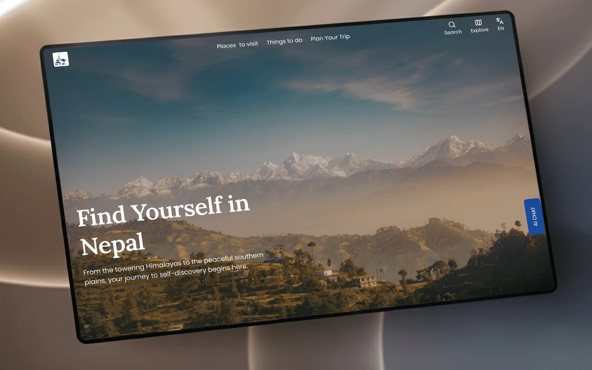
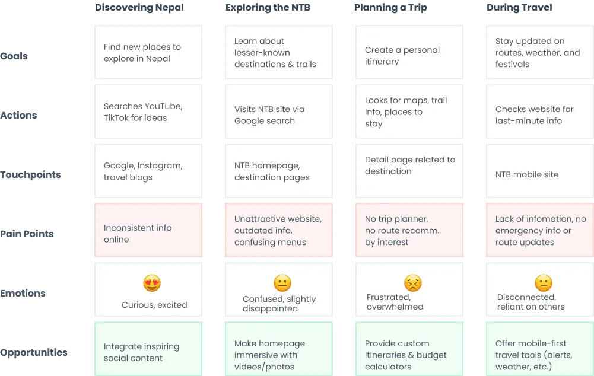
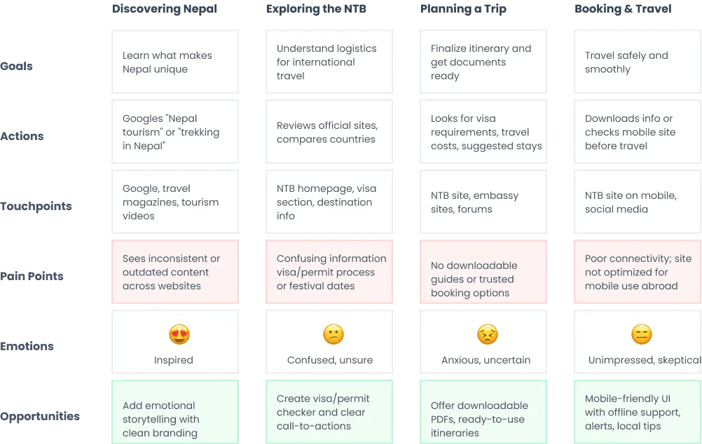
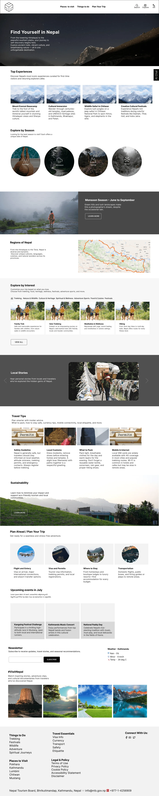
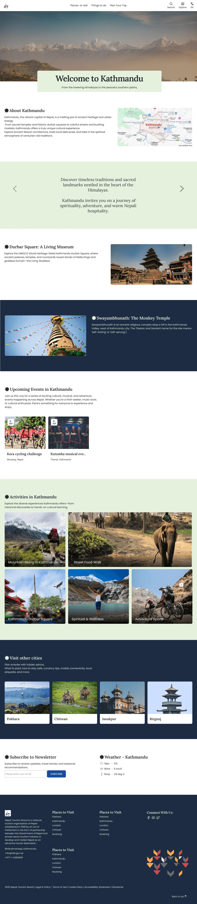
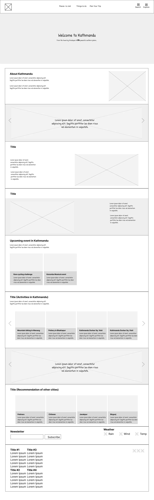
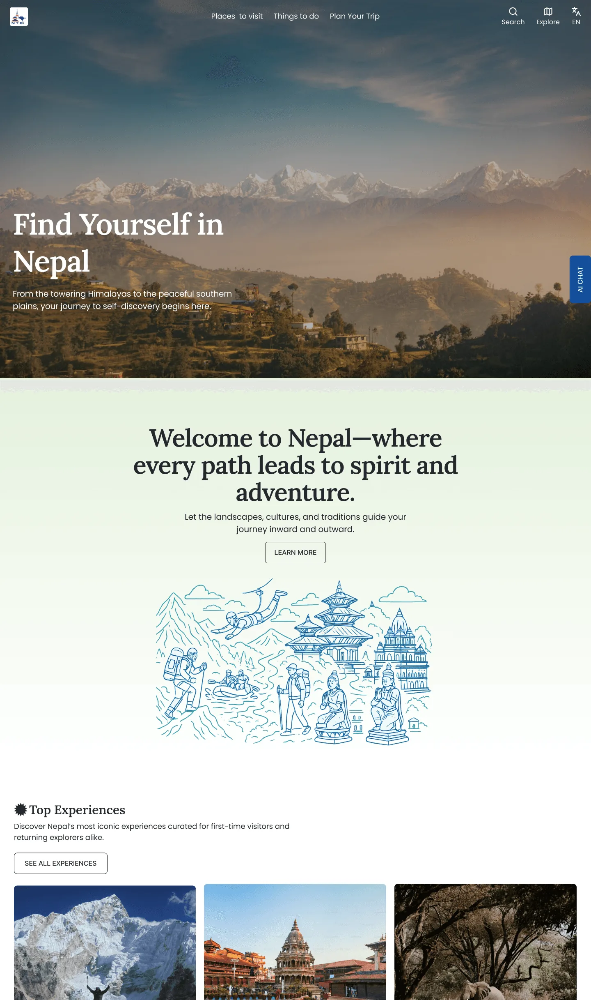
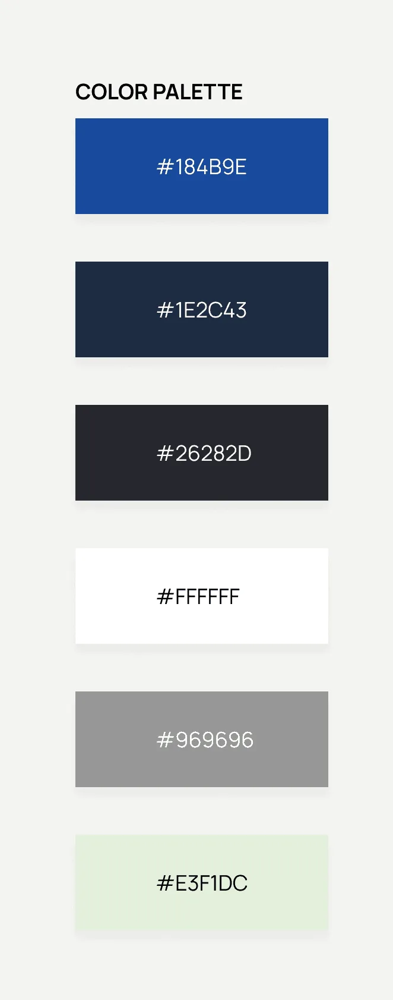

Nepal Tourism
Board Redesign

01 — ProblemA gateway that didn’t inspire the journey
The existing Nepal Tourism Board website suffered from an outdated design, poor navigation, and fragmented information architecture. Travelers planning a trip to Nepal were forced to stitch information together from scattered sources.
The core challenges: difficult navigation, lack of visual engagement, scattered travel essentials, and absent itinerary guidance.
02 — ResearchListening to travelers
I surveyed 12+ travelers and mapped their journeys across four stages — discovering Nepal, exploring the NTB, planning a trip, and traveling — to find where the experience breaks down.
- Information overload frustrates international first-time visitors
- Local tourists and travel agencies need structured resource access
- Travelers want both inspiration and practical planning tools in one place


03 — SolutionFrom information portal to digital gateway
I restructured the homepage around a psychological journey — hero visuals and storytelling first, then practical depth. The information architecture was reorganized around traveler goals: “Places to visit”, “Things to do”, “Plan Your Trip” — with a centralized trip-planning hub consolidating visas, maps, safety and transportation.
- Inspirational homepage with Top Experiences, seasonal & regional exploration
- Destination pages with rich visual narratives, itineraries and activities
- Cultural branding — Dhaka Topi textures and Nepal flag sun motifs
Visual language: Lora for tradition paired with Poppins for modernity.



04 — OutcomeAn inspiring gateway to Nepal
The redesign delivers responsive desktop and mobile experiences that transform the platform “from a static information portal into an inspiring digital gateway to Nepal” — balancing emotional engagement with functional usability across devices.

